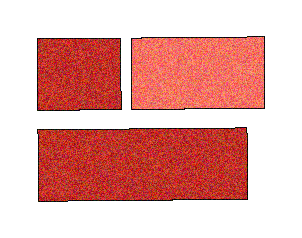
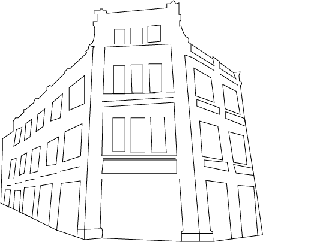
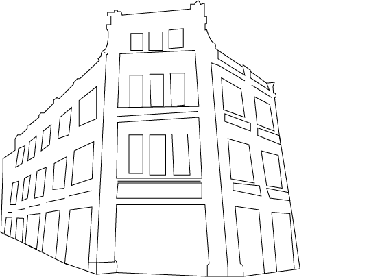

關於我們


有別於傳統上大稻埕定義，本站介紹範圍聚焦在目前多數人熟悉的大稻 埕觀光區，以迪化街為主，延伸至捷運大橋頭站、重慶北路、市民大道以及碼頭一代，並 結合線上購物，最愛店家觀光路線規劃等使用者互動功能，盼能聚焦大稻埕觀光。
 

LOGO設計
以書法字體強調大稻埕的歷史文化感。
大字中間紅點為畫筆，代表著大稻埕在人文藝術上的輝煌歷史。
稻字融合稻榖元素，顯示出大稻埕最初以「曬稻穀的廣大場域」而得名。
埕字中心為茶葉，大稻埕清代開始，因茶葉貿易而繁華。茶葉為大稻埕歷史上重要之元素。
最新消息
熱門美食

波麗路西餐廳
 臺北市大同區民生西路314號
臺北市大同區民生西路314號


位於民生西路上的波麗路西餐廳， 1934年開業，為全台第一間西餐廳， 見證了大稻埕的繁華起落，時代的更迭。 走進波麗路 品嚐臺灣人最先認識的西餐味。

鯉魚
臺北市大同區迪化街一段169號
漫步在熙來攘往的大稻程迪化老街，難忘這古色古香的美味記憶，用「初心」做料理，把家傳的南北貨食材入菜 讓辦桌料理也能在家常菜中幸福入口，這是鯉魚誕生初衷，歡迎來找回你的美食拼圖。

古早餅弟免煎嗲
大稻埕迪化街義美前方
迪化街義美前，古早餅弟複製古法，送上熱騰騰的傳統臺式點心免煎嗲 ，提供花生、芝麻、黑糖、紅豆、奶油多種口味，配上古早味豆漿， 是經濟實惠的點心選擇，並能在探訪大稻埕的過程中，體會臺式點心的美好。
熱門景點

大稻埕具有豐沛的人文歷史，傳統的南北貨批發外，近期更成為臺北文創藝術與商業發展的聚集地。可享而知其景點包含古今 臺灣文化精隨，除了有著名的三大廟外「法主公廟」、「慈聖宮廟」與「霞海城隍廟」外，也有介紹歷史與老屋再生的博物館， 路旁建築可尋回名人李臨秋、陳天來等人的足跡，碼頭區有貨櫃特色市集，也可騎自行車享受河岸風景，是非常值得探訪的休閒場所。
 霞海城隍廟
霞海城隍廟
 大稻埕碼頭自行車
新文化運動紀念館
大稻埕碼頭自行車
新文化運動紀念館
 大稻埕碼頭
大稻埕碼頭
熱門商家

李亭香
位於迪化街一段309號， 1895年創立的臺派糕點店， 已傳承百年 並持續創新臺灣糕點。

滋養豆餡舖
滋養製菓成立於1953年，正統日式糕點，造型多以季節，自然為題材 用以豐富佐茶之雅趣 食材以甜而不膩口感細緻之高級豆餡為其最大特色，嚴選食材 送禮自用兩相宜。

民藝埕
位於迪化街霞海城隍廟旁，為一棟百年的三進式街屋，以民藝精神為主題。一樓第一、二進為亞洲陶、瓷、 民藝品賣店「陶一二」，一樓三進為咖啡小酒館「Le Zinc 洛」，二樓為茶屋「南街得意」。
熱門商家
李亭香
位於迪化街一段309號， 1895年創立的臺派糕點店， 已傳承百年 並持續創新臺灣糕點。
滋養豆餡舖
滋養製菓成立於1953年，正統日式糕點，造型多以季節，自然為題材 用以豐富佐茶之雅趣 食材以甜而不膩口感細緻之高級豆餡為其最大特色，嚴選食材 送禮自用兩相宜。
民藝埕
位於迪化街霞海城隍廟旁，為一棟百年的三進式街屋，以民藝精神為主題。一樓第一、二進為亞洲陶、瓷、 民藝品賣店「陶一二」，一樓三進為咖啡小酒館「Le Zinc 洛」，二樓為茶屋「南街得意」。
熱門商品

大稻埕小日禮盒(3入)
$350
(10入) $400

(15入) $220


$1,200

300公克 $2,500

10片 $300
交通資訊


至橘線大橋頭站、紅線雙連站、綠線北門站下車後，皆可步行 抵達。

- 大稻埕碼頭：綠17、紅33
- 迪化街：811、紅33
- 民生西路口（大稻埕碼頭）：539、669、785、民生幹線
永樂市場與大稻埕公園皆提供停車場